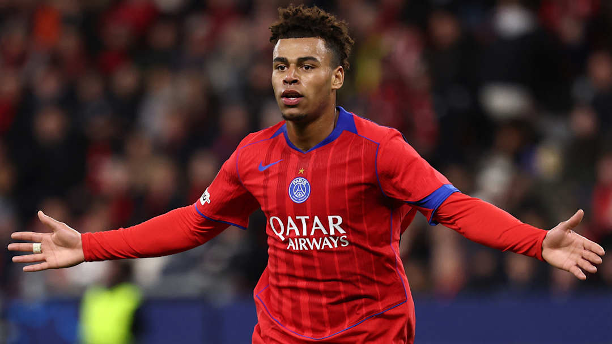

19-year-old Rennes and France sensation Desire Doué won the prestigious Golden Boy award, given to the best young player in world football. Known for his flair and humility, Doué thanked his teammates and joked, “I hope this doesn’t mean I have to pay for dinner now.”
